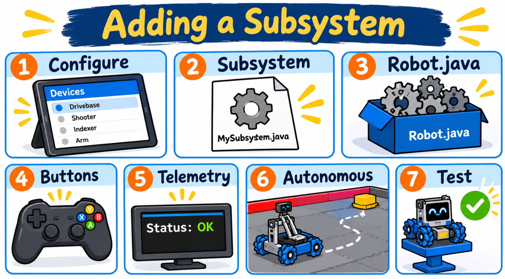
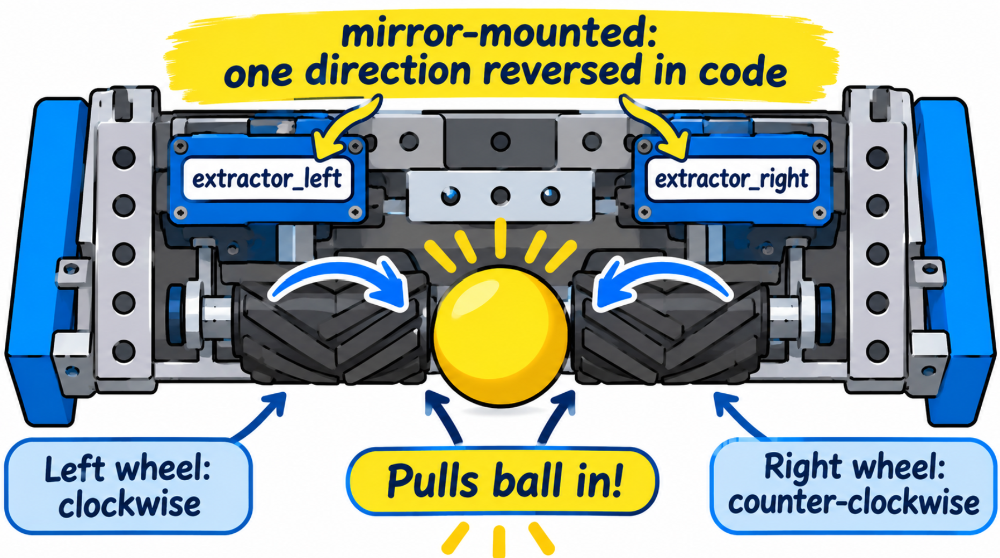
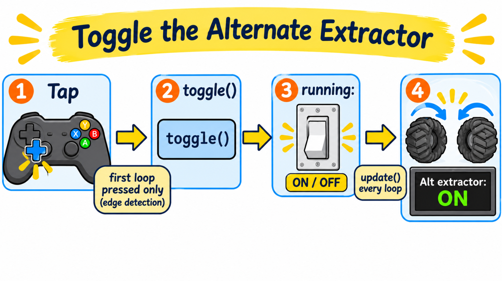

Every mechanism you've added so far (the intake, the feeder, the flywheel) followed the same steps. Once you can see those steps as a recipe, adding any new mechanism to your robot is a checklist, not a mystery. This lesson teaches the recipe first, then walks through it with a real example: an alternate pollen extractor made of two continuous-rotation (CR) servos on the front of the robot.
The Extractor Arm lesson builds a different extractor: one positional servo that swings a bar down. This lesson builds two spinning wheels instead. A robot has one or the other, so add one of them to your code, not both. They would both want D-pad down, and one tap would run two mechanisms at once.
The reward is the complete AltExtractor subsystem plus every line you add to Robot, your
TeleOp and your autos. To unlock it, score 14 out of 15 on the quiz. The questions come from a pool
of 30 and most of them show you a line of code and ask what it does, so read every code block here slowly.
No simulator support: the simulator robot has no CR-servo extractor, so nothing moves on the field. Your code still compiles and runs, and telemetry shows the extractor turning ON and OFF. On a real robot with the servos, the wheels spin.

Add any mechanism the same way, in this order:
update(): runs every loop and makes the hardware match the state.Robot.java. A field, a line that builds it, and
subsystems.add(...) so the scheduler calls its update().Each step only depends on the one before it. The configuration name is used by the subsystem; the subsystem is
used by Robot; Robot is used by the TeleOp and autos. And because buttons only call
commands, the TeleOp and autos never need to know how the mechanism works, only what to ask it to
do.

Two CR servos sit on the front of the robot, one on each side, with grippy wheels that pull pollen in. The driver taps D-pad down to start them and taps it again to stop them. No reverse for now.
On the Driver Hub, under Configure Robot, add both servos to free servo ports as Continuous Rotation Servo (not plain Servo), named exactly:
extractor_leftextractor_rightA positional servo is told where to go (0.0 to 1.0). A CR servo is told
how fast to spin (−1.0 to 1.0), like a small motor. If you configure it as the wrong type,
hardwareMap.get(CRServo.class, ...) won't find it.
AltExtractor.javaConstants. One named number for how fast the wheels spin:
private static final double RUN_POWER = 1.0; // full speed while runningstatic final means one shared value that never changes while the program runs. If the wheels pull too
hard, you change this one line.
Fields. The two servos, and the state:
private final CRServo left; // null if this robot has no alt extractor
private final CRServo right;
private boolean running = false; // does the driver WANT the wheels spinning?private: only AltExtractor may touch the servos. Everyone else has to ask through a
command.final: each servo is found once, in the constructor, and never swapped.running is the whole state. It's just on or off, so a boolean is enough.
(The intake needed an enum because it had three choices. If you add reverse later, turn this into an enum.)One subsystem, two servos. Notice we didn't make two subsystems. The two wheels always work together, so one subsystem owns both. A subsystem is a mechanism, not a single device.
The constructor.
public AltExtractor(HardwareMap hardwareMap) {
CRServo foundLeft = null;
CRServo foundRight = null;
try {
foundLeft = hardwareMap.get(CRServo.class, "extractor_left");
foundRight = hardwareMap.get(CRServo.class, "extractor_right");
} catch (IllegalArgumentException e) {
foundLeft = null; // either one is missing: run without the extractor
foundRight = null;
}
left = foundLeft;
right = foundRight;
if (hasExtractor()) {
right.setDirection(DcMotorSimple.Direction.REVERSE); // mirror-mounted
left.setPower(0.0); // start stopped
right.setPower(0.0);
}
}hardwareMap.get throws an
IllegalArgumentException. We catch it and set both servos to null, so the
extractor is either completely there or completely off. That's why the code compiles and runs in the simulator and
on robots without these servos.private boolean hasExtractor() {
return left != null && right != null;
}Commands. They only change the state. None of them touch a servo:
public void on() { running = true; }
public void off() { running = false; }
public void toggle() { running = !running; } // ! means "the opposite of"
public boolean isRunning() { return running; }The TeleOp uses toggle(). Autos use on() and off(), because an auto needs to
know exactly what state it's asking for, not “whatever the opposite of now is”.
update(), called by the scheduler every loop:
@Override
public void update() {
if (!hasExtractor()) {
return; // no extractor on this robot
}
double power = running ? RUN_POWER : 0.0; // ON: run power, OFF: stop
left.setPower(power);
right.setPower(power);
}running ? RUN_POWER : 0.0 is the ternary operator: “if running is
true, use RUN_POWER, otherwise use 0.0”. It's a one-line if/else that
gives back a value.
Robot.java// with the other subsystem fields:
public final AltExtractor altExtractor;
// in the constructor, with the other subsystems:
altExtractor = new AltExtractor(hardwareMap);
subsystems.add(altExtractor);new AltExtractor(...) line and it won't compile: a
final field must be given a value in the constructor.subsystems.add(...) and it compiles but never moves: the scheduler never
calls its update(), so the state changes but no power is ever sent. This is the sneakiest mistake in the
recipe.
Tap-to-toggle needs edge detection, just like the intake's A button. Add a field to the TeleOp
class (outside the loop, next to previousA):
private boolean previousDpadDown = false;And inside the loop:
boolean pressedDown = gamepad1.dpad_down && !previousDpadDown; // true on the FIRST loop only
if (pressedDown) robot.altExtractor.toggle();
previousDpadDown = gamepad1.dpad_down; // remember for next loopThe loop runs about 50 times a second, so a quick tap is held for several loops. In the Extractor Arm lesson,
D-pad down always means “deploy”, so saying it 10 times changes nothing. Here, a tap
toggles: without edge detection, holding the button would flip the extractor on, off, on, off... every loop.
pressedDown is true only on the one loop where the button is down now and wasn't last loop.
The field must live outside the loop. Declared inside, it would start over as
false every loop and forget the last one.
In the simulator, the / key is D-pad down.
telemetry.addData("Alt extractor", robot.altExtractor.isRunning() ? "ON" : "OFF");In the simulator, this line is how you test the whole recipe: tap / and watch it flip between ON and
OFF.
robot.altExtractor.on(); // start pulling pollen
// ... drive, calling follower.update() and robot.update() every loop ...
robot.altExtractor.off(); // done
robot.update(); // send it to the servos right awayRemember: on() only changes the state. The servos only start when robot.update() runs, so
any waiting you do in an auto must keep calling robot.update().